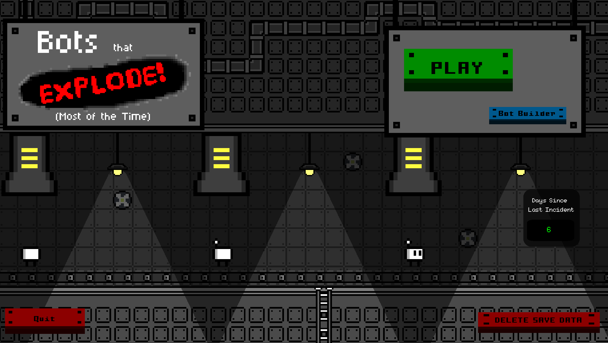
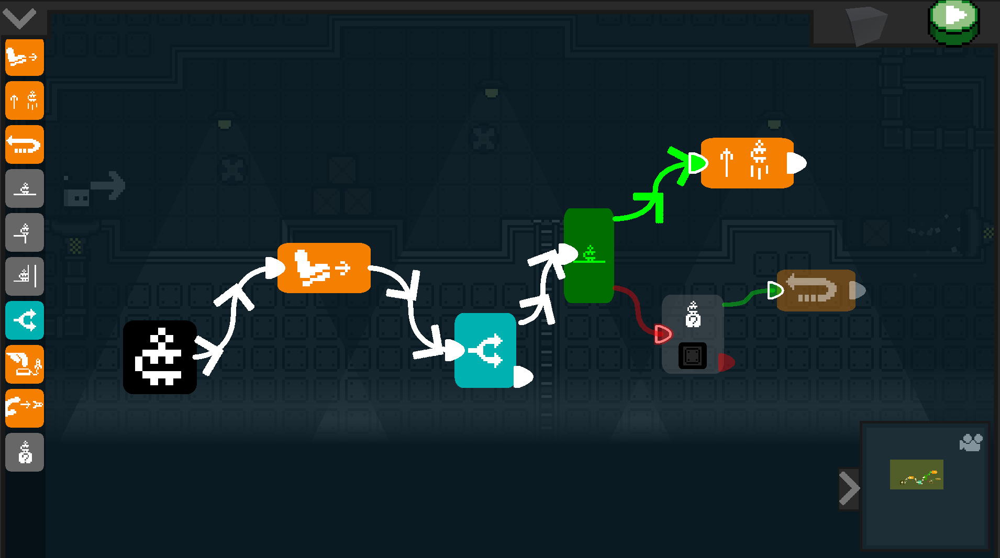
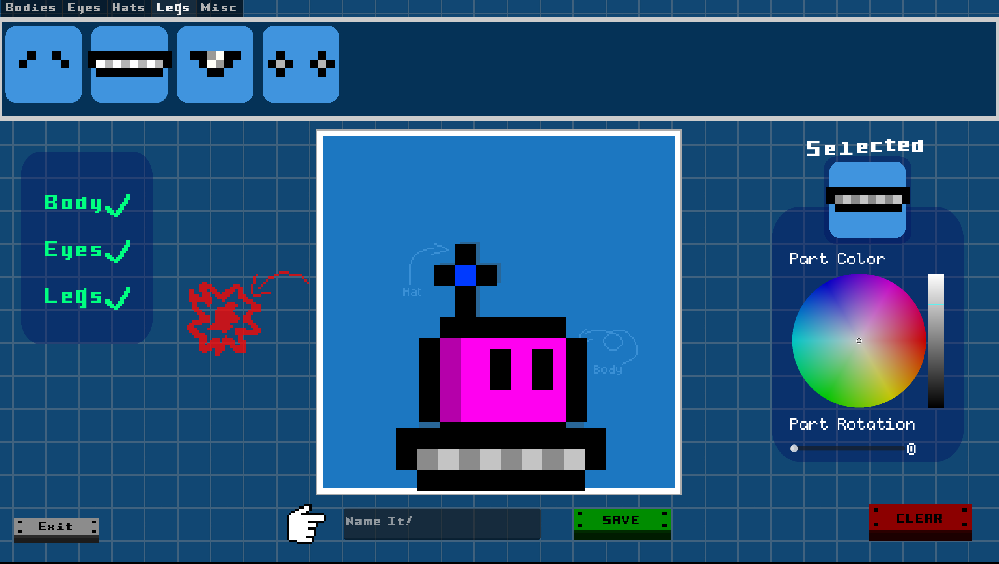
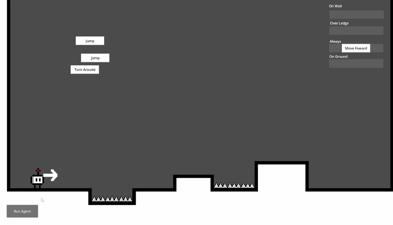

<!DOCTYPE html>

<link rel = 'stylesheet' href='../style.css'>

<!-- Icon Links -->
<link rel="stylesheet" href="https://cdnjs.cloudflare.com/ajax/libs/font-awesome/4.7.0/css/font-awesome.min.css">
<script src="https://cdn.jsdelivr.net/npm/bootstrap@4.6.2/dist/js/bootstrap.bundle.min.js"></script>

<!-- This is the page tab information! (What shows on the browwser for the page window!)-->
<html>
    <head>
        <meta charset="utf-8">
        <meta http-equiv="X-UA-Compatible" content="IE=edge">
        <title>Robots That Explode [Most of the Time]</title>
        <meta name="description" content="The portfolio of Bashar Alqassar: ">
        <meta name="viewport" content="width=device-width, initial-scale=1">
        <link rel="stylesheet" href="">
    </head>
    <body>        
        <script src="" async defer></script>
    </body>
</html>


<!-- Overide for custom background image!-->
<body>

<style>
    body {
        background-image: url("../Images/Backgrounds/RobotsBG.png");
        background-repeat: no-repeat;
        background-size: cover;
        background-attachment: fixed;
    }
</style>

    
<!-- Sticky Header Bar, read from right to left on the page-->
    <div id="navbar" class="topnav">
       

        <a class="active" href="../index.html">
            </img>
            Home
        </a>

        <a class="active" href="../index.html#AboutMe">
            </img>
            About Me
        </a>

        <a class="active" href="../index.html#Projects">
            </img>
            Projects
        </a>
        
        <a class="active" href="../Pages/resume_view.html" target="_blank" rel="noopener noreferrer">
            </img>
            Resume
        </a>

        <a href="javascript:void(0);" onclick="show_collapsed()" class="navbar-dropdown">
            </img>
        </a>


        <script>
            function show_collapsed()
            {
                var navbar = document.getElementById("navbar");
                var show_hide_btn_icon = document.getElementById("navbar_showhide");

                console.log(navbar)

                if (navbar.className === "topnav") 
                {
                    navbar.className += " responsive";
                    show_hide_btn_icon.src = "../Icons/x-square.svg";
                    
                } else 
                {
                    navbar.className = "topnav";
                    show_hide_btn_icon.src = "../Icons/menu.svg";
                }
                console.log(navbar)
            }
        </script>       

    </div>

<!-- End of Navbar Template-->


<!-- End of Acordian container code -->


 <!-- Start of subpage template!!! (Fill content here!)-->


<div class="subpage-header-content">
    <!-- Page Logo -->
    <div class="subpage-header-holder">
        <a  href="https://docterbuster.itch.io/bots-that-explode-most-of-the-time" target="_blank">
            
        </a>
    </div>
        
    <!-- Autoplay Video Widget -->
    <div class="subpage-header-holder">
        <iframe controls class="home-showcase-video" src="https://www.youtube.com/embed/eDj0v-rygfI?start=0&loop=1&autoplay=1&mute=1" allow="accelerometer; autoplay; clipboard-write; encrypted-media; gyroscope; picture-in-picture; web-share" allowfullscreen>
        </iframe>
    </div>

</div>


<div class="subpage-header-content" style="column-gap: 100px;">

    <!-- Project Description Intro -->

    <div class="subpage-header-holder">

        <div class="subpage-text-body" style="width: 400px;">
            
            <a class="subpage-text-body-topic">About</a>
            <br>
                Robots that Explode (Most of the Time) is a game about AI Work Ethics….  <br>
                Disguised as a Programming Game….  <br>
                Disguised as a Puzzle Game…  <br>
                Disguised as a Platformer.

            <br>
            <br>
                I created this ridiculously named and described game in the last 2 months of my Masters Degree in Interactive Media & Game Development 
                with the goal to create a piece of media that will allow us to envision a better AI future. 
                The game focuses on deconstructing what it means to play a game in the first place and leveraging that to discuss the role of AI 
                in everyday work. 
            <br>
            <br>
                The main system developed for this game was a flow-based programming model that streamlines the development of programming a responsive state-machine for the core puzzle gameplay. 
                This development was two parts: One side was optimizing the UI/UX flow of the game and the other was the backend structure for the language 
                itself. 
            <br>
            <br>
                The game also includes a custom Bot-building system where users can create their very own custom robots while playing the game. 

        </div>

    </div>

    <div class="subpage-header-holder" >
        <a>
        <!-- Image -->
        
        
        
        </a>
        </div>

</div>

<!-- Project Key Tools used -->
<div class="tool-card-holder">

        <div class="tool-card">
            </img>
            <a class="tool-card-text" color="white">Godot</a>
        </div>
        <div class="tool-card">
            </img>
            <a class="tool-card-text" color="white">Git</a>
        </div>
        <div class="tool-card">
            </img>
            <a class="tool-card-text" color="white">GD Script</a>
        </div>

</div>


<div class="subpage-text-body">
    
    <a class="subpage-text-body-topic">Choosing a Programming Model </a>
    <br>

    It was very important that the programming language system needed to be approachable by anyone in order for the message of 
    the game to be effective and wide-reaching. I started to prototype a block-based system similar to that of Scratch 
    whereby instructions were represented by conditionals and actions that robot would take 

</div>


<div class="subpage-header-content" style="margin: 50px;">

    <div class="subpage-header-holder">
        <a>
            
        </a>
    </div>

</div>


<div class="subpage-text-body">
    
I quickly realized that it would take a very large amount of time to perfect the UI design of a
Scratch-based system using the tools and time that I had available, so I needed to pivot to another system. 

<br>
<br>
<a class="subpage-text-body-topic">A Flow-Based Model  </a>
<br>

While researching other accessible programming models, I was reminded of Flow-Based models similar to those found in Unreal Engine’s Blueprints or Shader Graphs in various game engines. 


</div>


<div class="subpage-header-content" style="margin: 50px;">
    <div class="subpage-header-holder">
        <a>
            
        </a>
    </div>

    <div class="subpage-header-holder">
        <a>
            
        </a>
    </div>

</div>


<!--Acordian Code Holder-->
<div  class="accordian-holder">
    <button class="accordian-button">
        </img>
        </img>
        <a>Ghost Data Playback</a>
        </img>
    </button>
    <div class="accordian-content">


        
    </div>
</div>


<div class="subpage-text-body" style="align-items: center; width: 680px; height: 400px;">
    <iframe src="https://docs.google.com/presentation/d/e/2PACX-1vTITPAkWWY53FMGTZIcyIuYLKkn0E97FMGXuM7oI0sab_0x3_JuTVGhu_VKy83jdzan7VaMNxPQVUL3/pubembed?start=true&loop=true&delayms=3000" frameborder="0" width="960" height="569" allowfullscreen="true" mozallowfullscreen="true" webkitallowfullscreen="true"></iframe>
</div>


 <!-- End of subpage template!!! (Fill content Above!)-->


<!-- Acordian container code (Needs to be below)-->
<script>
var acc = document.getElementsByClassName("accordian-button");
var i;

for (i = 0; i < acc.length; i++) {

// Toggle none state always
//acc[i].nextElementSibling.style.display = "none";

  acc[i].addEventListener("click", function() {
    this.classList.toggle("active");
    var panel = this.nextElementSibling;
    var droparrow = this.getElementsByClassName("accordian-drop-arrow");
    if (panel.style.maxHeight) {
      droparrow[0].style.rotate = "0deg";
      panel.style.maxHeight = null;
    } else {
      droparrow[0].style.rotate = "180deg";
      panel.style.maxHeight = panel.scrollHeight + "px";
    }
  });
}
</script>
 


</body>

<!-- This is a template for the footer! Place on every page!-->

<footer>


    <div>
            <br>
            <a class="written-text">This Website was 100% Developed by Bashar Alqassar (that's me!)<br></a>  
            <a class="written-text"> using Github Pages, HTML, CSS and the Bootstrap Library<br></a>
            <br>
            <a class="written-text">Contact me at </a>
            <a class="link" href="mailto:bbalqassar@gmail.com">BBAlqassar@gmail.com<br></a>
            <a class="written-text">Check out my </a>
            <a class="link" href="../Pages/resume_view.html">Resume</a>
            <a class="written-text">here!</a>

    </div>
    
    <hr style="width:50%;text-align:center;">
    
    <div>
            <a href="mailto:bbalqassar@gmail.com" class="social-link">
                
            </a>
    
            <a href="https://www.linkedin.com/in/bashar-alqassar-974830224/" class="social-link">
                
            </a>
            
            <a href="https://github.com/DocterBuster" class="social-link">
                
            </a>
            
            <a href="https://docterbuster.itch.io/" class="social-link">
                
            </a>
    
    </div>
    
    <div style="clear: both;">&nbsp;</div>
</footer>

<!-- End of Footer Template-->
<html>